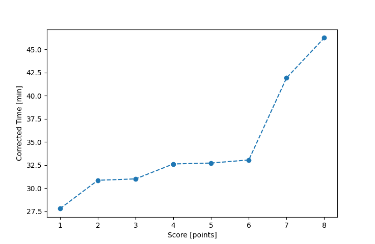

| Wind: | 2-3 (BFT) |
|---|---|
| RC: | John_T, Ralph_H, Betsy_H |
| Date: | July 11, 2018 |
| Notes: | I2 Starboard |
| Rank / Score | Name | Boat | Input Time [mm:ss] | Input Offset [mm:ss] | Race Time [mm:ss] | Race Time [s] | Handicap | Corrected Time [s] | Corrected Time [mm:ss] |
|---|---|---|---|---|---|---|---|---|---|
| 1.0 | Ron_F | F5 | 26:50 | 00:00 | 26:50 | 1610 | 0.96600 | 1667 | 27:47 |
| 2.0 | Bill_P | SF | 30:58 | 00:00 | 30:58 | 1858 | 1.00400 | 1851 | 30:51 |
| 3.0 | Mike_F | SF | 31:07 | 00:00 | 31:07 | 1867 | 1.00400 | 1860 | 31:00 |
| 4.0 | Art_M | SWSX | 31:17 | 00:00 | 31:17 | 1877 | 0.95900 | 1957 | 32:37 |
| 5.0 | Chris_E | SF | 32:51 | 00:00 | 32:51 | 1971 | 1.00400 | 1963 | 32:43 |
| 6.0 | Rod_H | PUF | 36:57 | 00:00 | 36:57 | 2217 | 1.11800 | 1983 | 33:03 |
| 7.0 | Jay_H | SWSX | 40:13 | 00:00 | 40:13 | 2413 | 0.95900 | 2516 | 41:56 |
| 8.0 | Lewis_V | BCN | 40:15 | 00:00 | 40:15 | 2415 | 0.87000 | 2776 | 46:16 |
| 9.0 | Cody_M | SF | DNF | -- | -- | -- | -- | -- | DNF |

Application Notes:
All race results are unofficial
View source code at https://github.com/cessnao3/portsmouthracecalc/